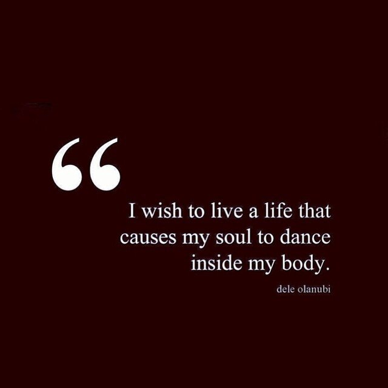

Happiness in the Moment

This quote is beautiful. It so eloquently phrases something I've had to ask myself more and more lately: will doing this make me happiest? What do I really WANT to do today? What do I want to be doing in a year? 5 years? Especially with the fatigue and pain lately, I've had to listen to my body, but more importantly my heart, every day and ask if I really want to workout?. Or do I want to sleep? Do I want to see my friends today? Or do I need some time alone? Any outcome is okay, as long as it's what makes you happiest right then. Another quote by Dele Olanubi I love: "Sometimes you just have to take a day to shut the world out so you can open up to yourself and deal with the chaos inside of you. And you don't need to feel guilty or apologize or try to justify needing space. You just do what you need to do to take care of yourself, and that's it." Health encompasses the mind and emotions in addition to the body. After such prolonged dedication, sometimes, to me, the gym feels burdensome rather than beneficial. So I ask which benefits me more - going to the gym (physically) or staying home (emotionally)? Will seeing friends uplift me, or do I need to mentally recuperate in silence for a day? It's all okay. Health from all aspects are essential. Outside of fitness, looking at the bigger picture of life, career has evoked similar thoughts. Because of my career, I always imagined going to grad school eventually. I am expected to by others... But the thought of it repulses me and honestly depresses me. It's not for me, and it took me forever to admit that to others. It's my choice what makes me happiest, not what others expect from me. I don't know what I'll be doing in 5 years anymore. But that's okay. It's all okay. As long as my soul is dancing